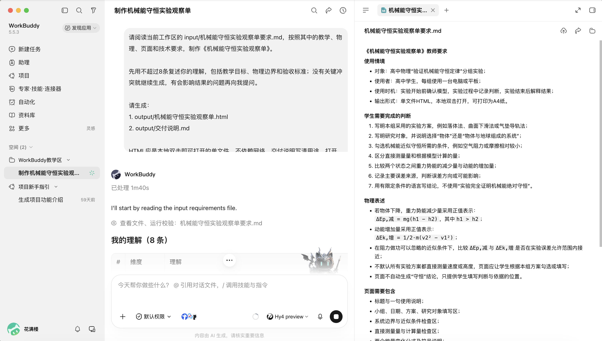
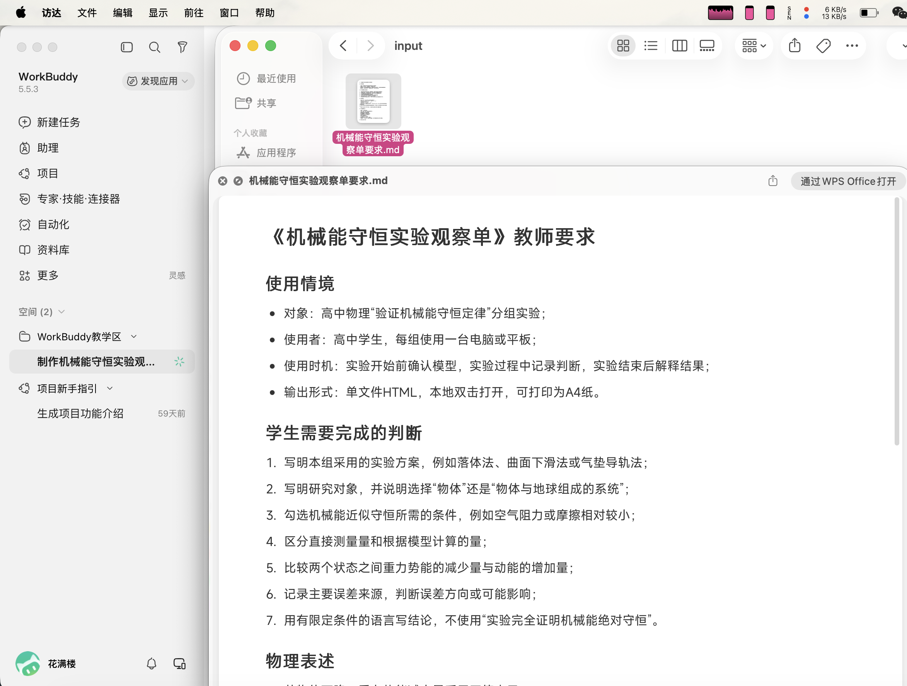
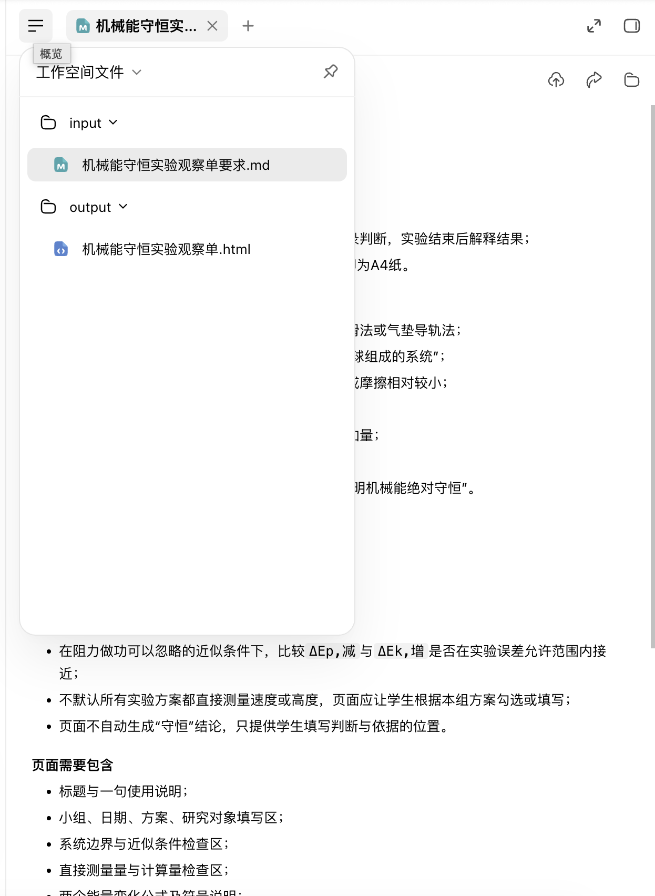

真实实践文章池 · 2026-09-05 · 本地内部审阅
第一次生成走通了，
实验内容还需要回到教材
核查结论：首轮暂不直接发给学生。
生成与预览已完成，作者试过勾选。物理表述、实验范围和无效输入处理存在问题。原始文件保持不变，第二轮修改要求已准备。
共同起点：教材中的一个具体实验
人教版必修第二册第八章第5节提供自由下落物体和斜面下滑物体两个案例，后者使用倾斜气垫导轨。入门演示先选择纸带记录重物下落，让教师无需了解作者本地项目也能跟做。
首轮：三类方案、七大栏目及大量通用勾选。
本次形成的修改要求：装置与选点 → 原始测量 → 计算比较 → 解释与结论。第二轮尚未执行。
最先需要改的内容
- 合力做功等于动能变化；重力功的替代需要条件。
- 动能变化就是末态减初态，不能一概称为正值。
- 统一单物体纸带实验，避免把水平多物体系统套进同一质量公式。
- 让学生记录点距、时间来源和速度计算；质量可约去，g可为给定量。
- 精简误差任务，允许基于证据写“在误差允许范围内验证”。
- 拦截零质量、负质量及无效g，准确解释输入问题。
逐项位置、依据和完整修订要求见审查正文。
老师第一次遇见.md文件
Markdown用普通文字和少量符号表示标题、列表。先学会找到、打开和核对要求即可，不必先学语法。Word仍可用于熟悉的排版任务。
- 工作区“…”更多 → 打开文件夹 → Finder查看md（菜单路径来自作者反馈）。
- 点击对话中的文件引用 → 右侧阅读。
- 右侧“概览” → 工作空间文件 → input或output → 选择文件。
本机Finder已能格式化预览，其他Mac可能依赖不同的预览支持。WorkBuddy内的两条路径可继续使用。
五张真实截图
原图未裁剪、遮挡或重绘，含昵称与历史任务信息；公开配图另做脱敏副本。点击图片打开原图。



验收状态
| 检查对象 | 当前结论 |
|---|---|
| 原始截图与首轮文件 | 已保存并核对哈希 |
| 教材原页与物理内容 | 审查完成，9项修改要求 |
| 作者勾选操作 | 作者实测正常 |
| 算术与缺失值 | 原脚本模拟通过指定样例 |
| 无效输入拦截 | 发现缺陷，待修复 |
| 第二轮成品 | 尚未生成 |
| 打印、清空、课堂使用 | 未完成实测 |
未自动操作浏览器、未生成审阅截图或进行移动端验收。页面内容由作者人工查看。
首轮页面对照
这是含上述问题的原文件快照。展开后仅作对照；它不是修正后的学生版。